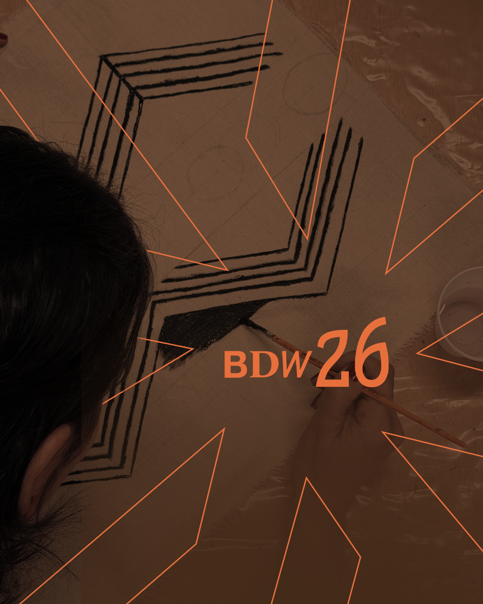
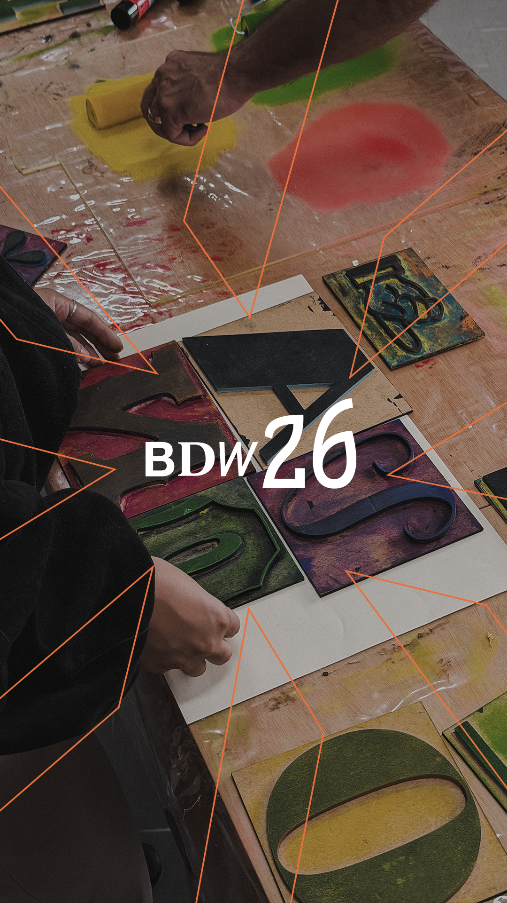

Vídeos & motion
Peças em movimento.
Uma seleção de vídeos, motion design e direção de vídeo — do conceito à entrega.
Toninho
Motion · 0:32
Brasília Design Week
Motorista Serie A
Motion · 0:24
Brasília Design Week
Produto
Título do vídeo 5
Motion
Animação do selo de 30 anos
Passe o mouse sobre o vídeo para ativar o áudio.
Peça em destaque
Três vídeos compondo uma única cena — o do meio tem fundo transparente e flutua sobre os outros.
Feed 4:5
Peças em 1080×1350 — estáticos e vídeos alternados, prontos para o feed.


Vídeos horizontais
Peças em formato widescreen — apresentações, reels de tela cheia e motion para web.
Título do vídeo 1
Motion · 0:00
Título do vídeo 2
Motion · 0:00
Título do vídeo 3
Motion · 0:00